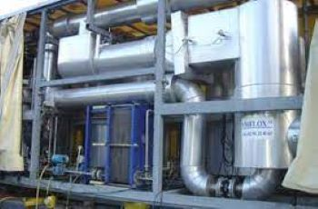
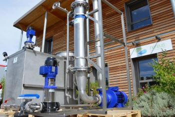
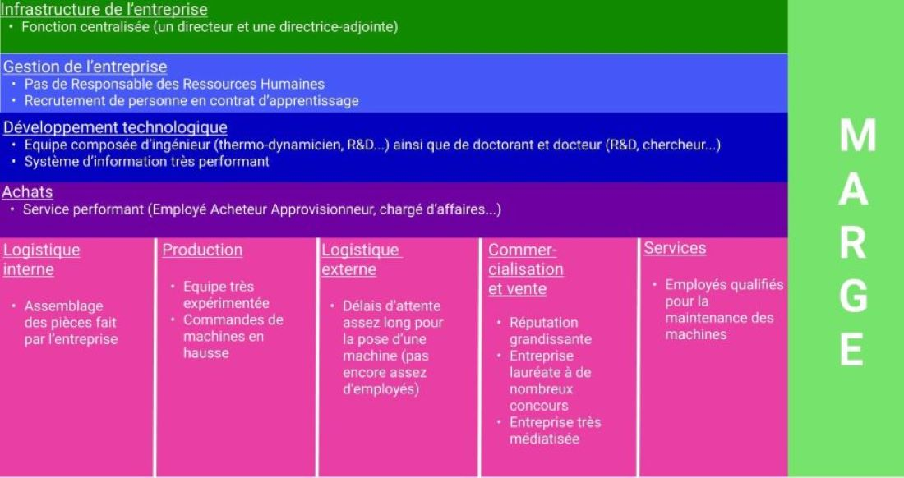
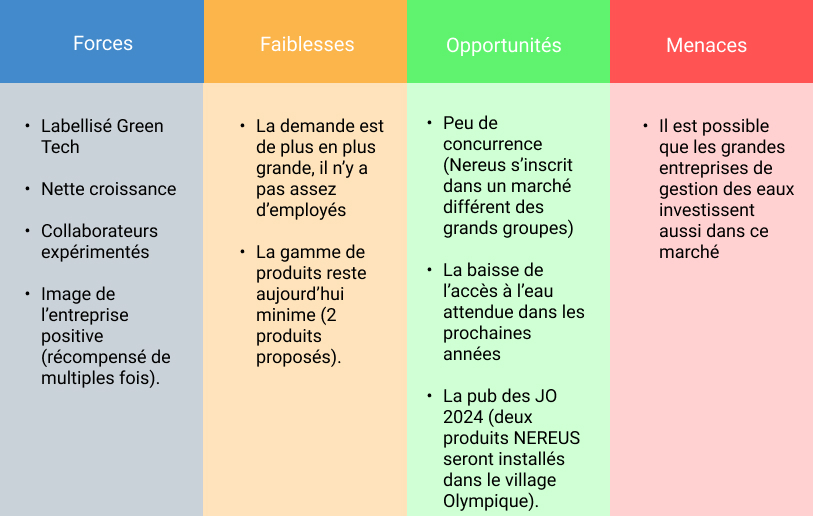
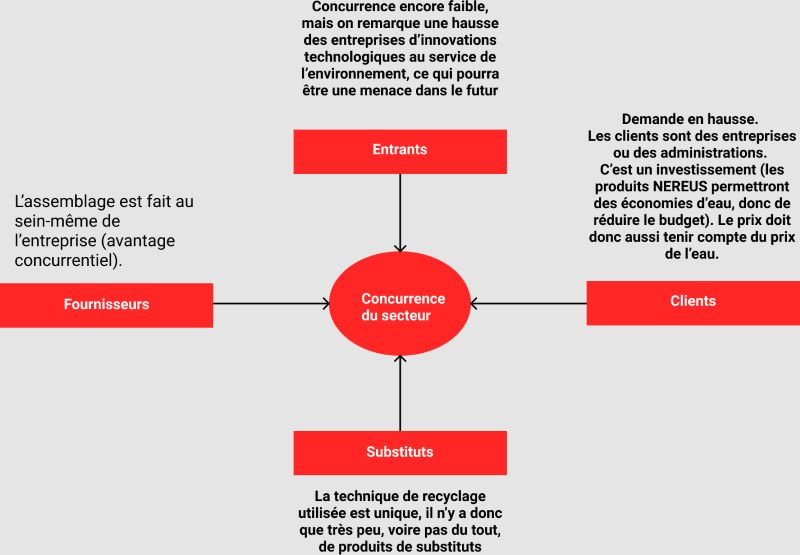

Nereus est une entreprise française basée à Montpellier. Elle est spécialisée dans le domaine de l'eau, dans le secteur d'activité de l'ingénierie et des études techniques. L'objectif de Nereus est d'extraire de l'eau à partir de ressources en eau inexploitées. Ces ressources peuvent être par exemple du lisier ou de la boue. Ces ressources peuvent aussi être aussi présentes dans les villes (toilettes, machines à laver...).
Nereus a été en mai 2012 par Emmanuel Trouve. Il la dirige encore aujourd'hui. Elle a gagné de nombreux concours en 9 ans d'existence : le prix de la TPE en 2014, le Coup de Pousse en 2015, le trophée Hydro Innovation en 2016. Elle est aussi lauréate du concours des Inn'ovations en 2019.
Nereus est une organisation marchande. La PME compte 40 salariés à ce jour et effectue un chiffre d'affaires de 3 661 502 € en 2019. Elle est Française et opère seulement au niveau national à ce jour.
Elle a de nombreux partenaires : universités, régions, associations.
On peut notamment citer l'INSA (Institut National des Sciences Appliquées), la région Occitanie, ou bien l'ASTEE (Association scientifique et technique pour l'eau et l'environnement).
L'entreprise propose à ce jour deux produits : VALORDIG et RECYNOV.
Valordig est une unité d’extraction d’eau et d’engrais à partir des boues de méthanisation (digestats) et de lisiers. À partir du lisier brut, on extrait la matière sèche en récupérant d'un autre côté un "jus". On effectue ensuite une nanofiltration, permettant de récupérer un engrais n-p ainsi que de l'eau. Par osmose inverse, on purifie l'eau, et on récupère un nouvel engrais (engrais n-k). Ce produit possède la technologie Plug & Play (l'installation est contrôlable à distance). Ce produit est destiné à des exploitations d'animaux (porcs, bovins...). Il leur permet d'améliorer l’efficacité et la productivité de leurs exploitations, tout en exploitant les déchets. L'épandage est de cette façon permise toute l'année, et non interdit certains mois de l'année.

Recynov est une unité qui se branche à la tuyauterie. C'est un système qui combine recyclage de l’eau et économie d’énergie. Elle permet 95 % de recyclage des eaux usées, en consommant 3 fois d'énergie que les solutions déjà existantes. Une cuve permet un accès à l'eau recyclé à tout moment. L'unité est automatique et contrôlable à distance (Plug and Play). De nombreuses utilisations sont possibles : chasse d'eau, machines à laver, nettoyage, irrigations... Ce service est destiné aux administrations ou à d'autres entreprises (il est utilisé par exemple dans un écoquartier à Anvers).

| Principales dépenses | Principales recettes |
| Achat de matières premières : 1 548 027 € | 2260572€ production de biens vendues |
| Charges externes et autres achats : 851 472 € | 1304593€ services et travaux |
| Salaires et traitements : 1 017 787 € | 96336€ vente de marchandises |
| Charges sociales : 202 685 € | Chiffres d'affaires : 3 661 502 € |
En comptant le reste des recettes et dépenses, le résultat de l'exercice Net 2019 est de 499 364 €.
Le résultat d'exploitation est lui de 176 500 €.
L'activité de NEREUS est la création, vente et installation de machines d'épuration d'eau.
Son modèle économique est B TO B et B TO A, c'est-à-dire que les produits de NEREUS sont destinés à d'autres entreprises ou à des administrations. La pose de machine de récupération d'eau permet à ces organisations de faire des économies d'argent, ainsi que d'avoir un impact réduit sur l'environnement.
Voici ci-dessous la chaine de valeurs de l'entreprise.
Pour établir le diagnostic externe et interne de l'entreprise, nous utiliserons la démarche SWOT (Strengths Weaknesses Opportunities Threats ou Forces Faiblesses Opportunités Menaces). Nous utiliserons aussi l'analyse PESTEL (Politique, Économique, Sociologique, Technologique, Écologique, Légal). Enfin, pour analyser les forces concurrentielles, nous établirons un schéma des DAS (Domaines d'Activités Stratégiques).
Voici ci-dessous le schéma de la démarche SWOT :
Voici ci-dessous un tableau présentant la démarche PESTEL :
| Politique | Contexte politique national stable Aides aux entreprises nombreuses |
| Économique | Stabilité de l'euro Taux du PIB en 2020 en chute de 7.9 % |
| Socioculturel | Les consciences évoluent de plus en plus par rapport au respect de l'environnement |
| Technologique | Investissement dans la R&D Possesion de brevets concernant des technologies innovantes Aides aux entreprises innovantes |
| Écologique | Mesures relatives aux matériaux utilisés De plus en plus de mesures et actions pour l'écologie |
| Légal | Normes de sécurité |
Voici ci-dessous le schéma des DAS :
